IIFC-Net: A Monaural Speech Enhancement Network with High-Order Information Interaction and Feature Calibration Wenbing Wei, Ying Hu, Hao Huang and Liang He Demo with VoiceBank+DEMAND datatset Sample Name Noisy Clean IIFC-Net p232_005 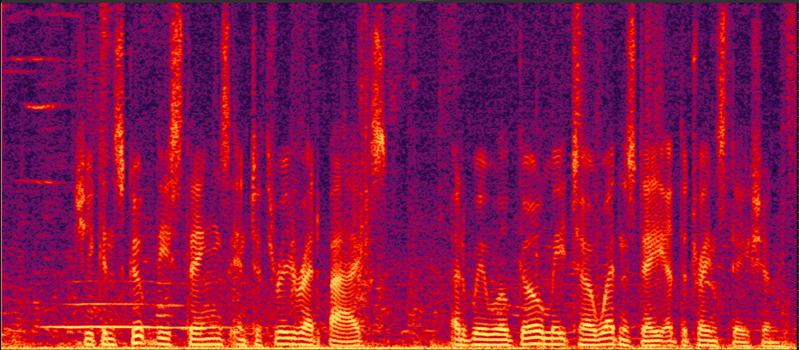 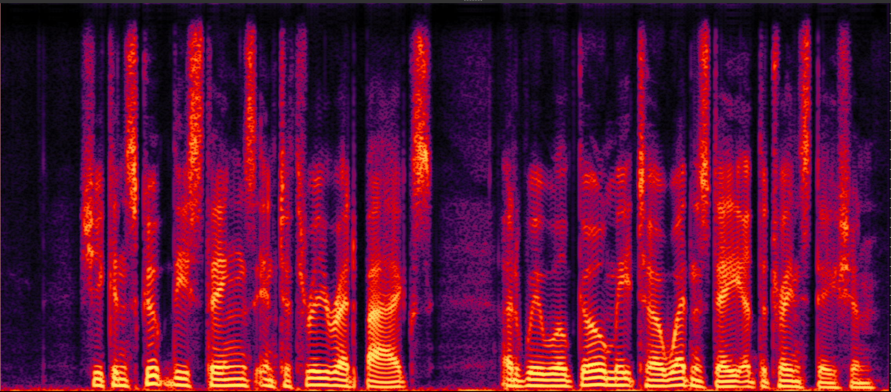 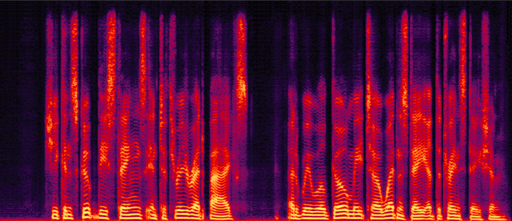 p257_432 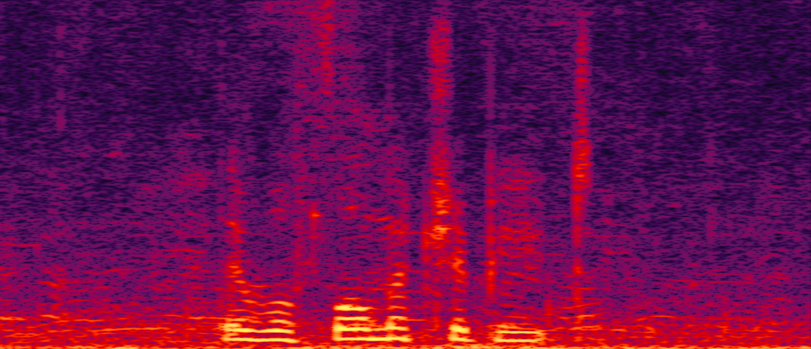 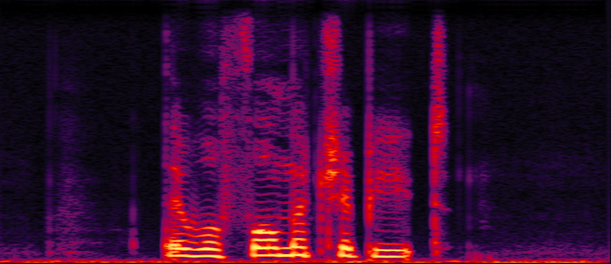 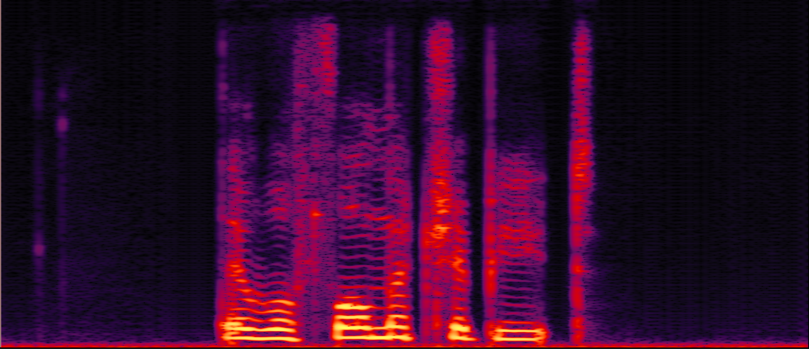 Demo with WHAMR! datatset Demo with noise in WHAMR! datatset Sample Name Noisy Clean IIFC-Net 050a0501 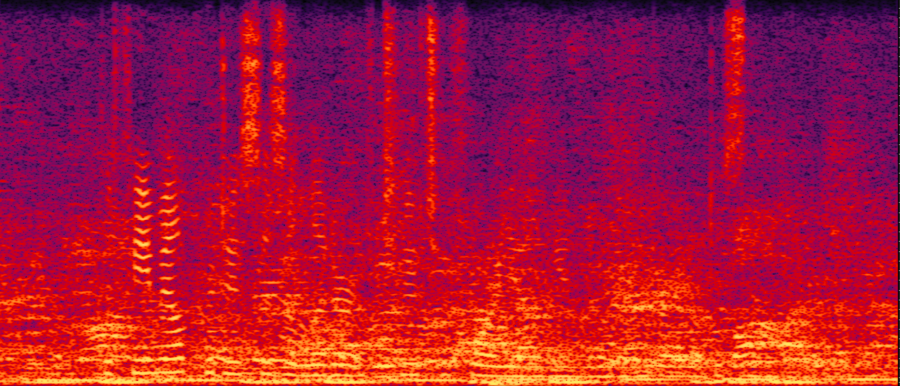 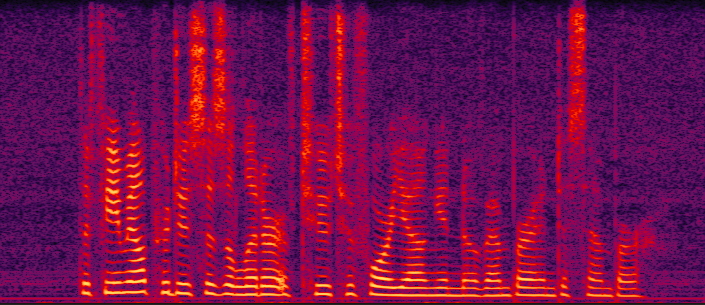 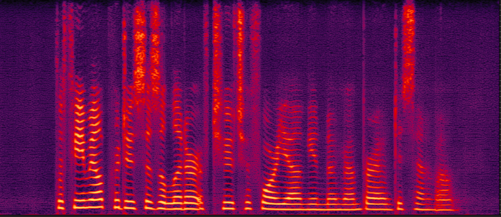 22ga010d 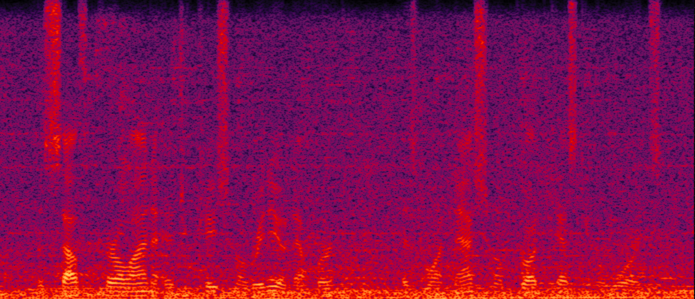 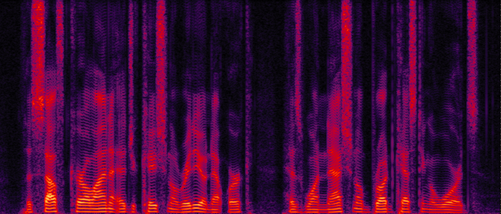 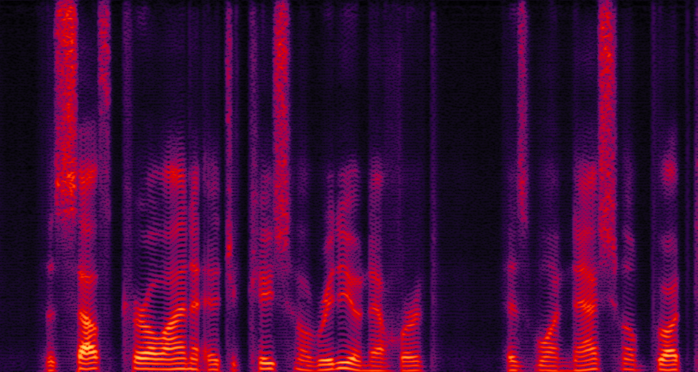 Demo with reverb in WHAMR! datatset Sample Name Noisy Clean IIFC-Net 050a0501 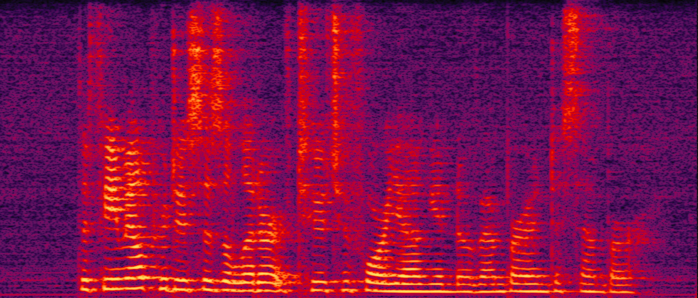 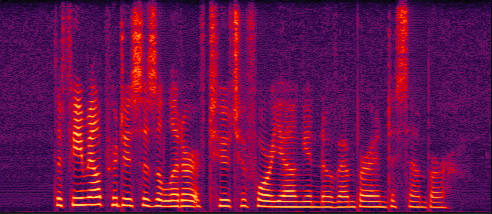 22ga010d 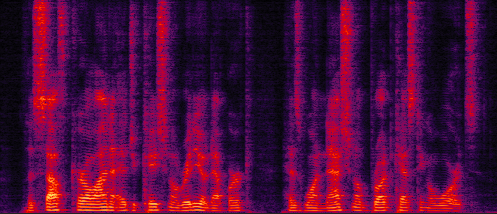 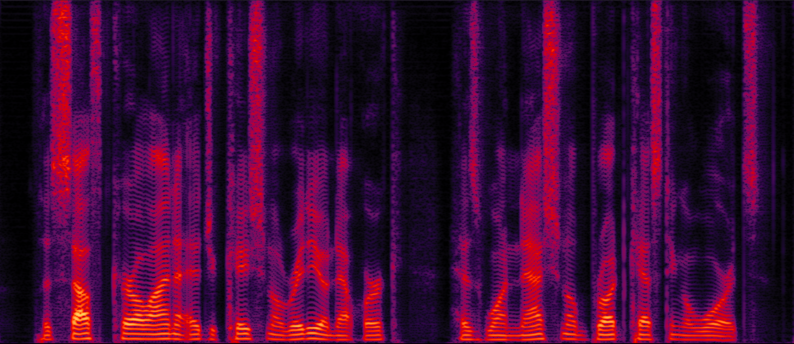 Demo with noise and reverb in WHAMR! datatset Sample Name Noisy Clean IIFC-Net 050a0501 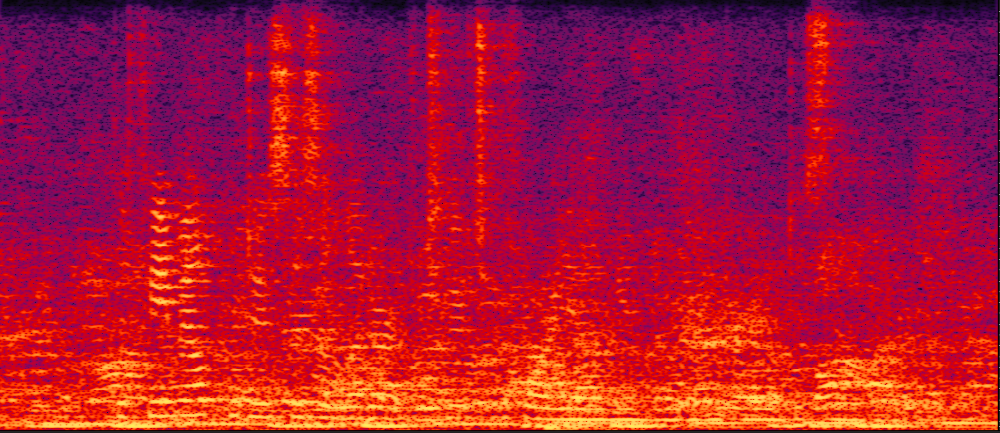 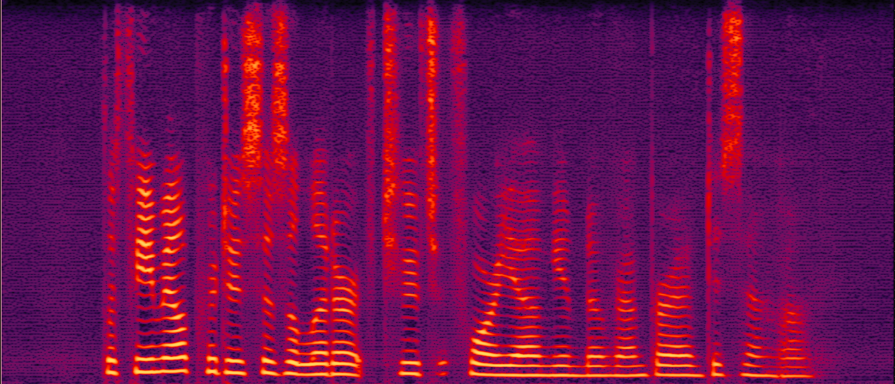 22ga010d 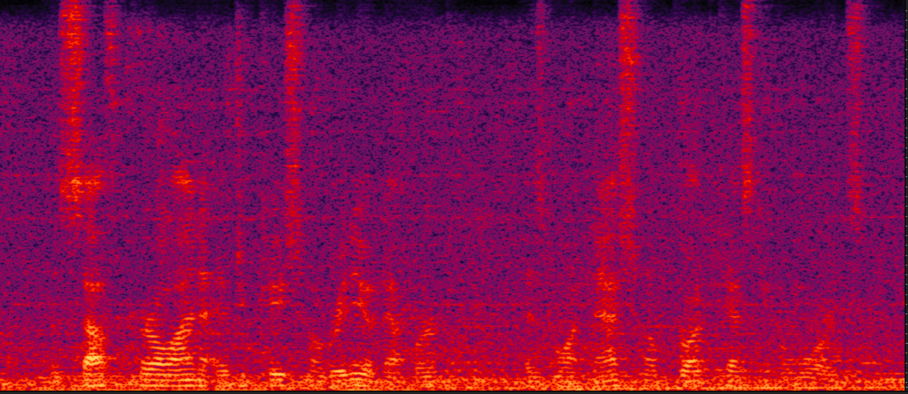 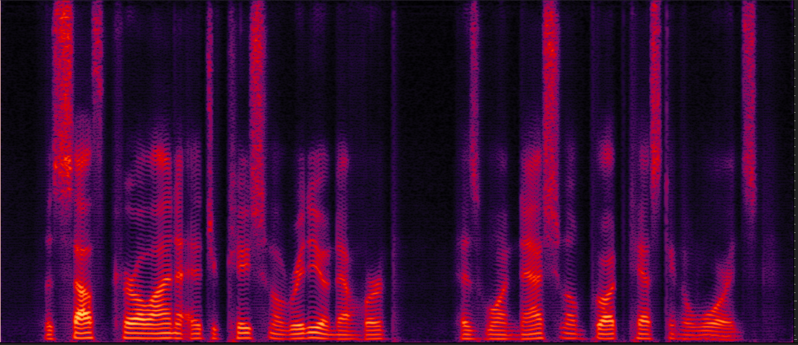